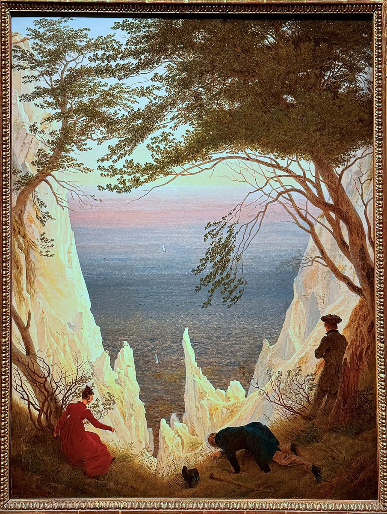

Rügen Kreidefelsen: Naturwunder an der Ostseeküste

Rügen Kreidefelsen – Ikone der Ostsee
Die schneeweißen Kreidefelsen auf Rügen sind eines der beeindruckendsten Naturwunder Deutschlands. Vor allem der Königsstuhl, der berühmteste Felsen, ragt 118 Meter hoch aus der Ostsee und bietet atemberaubende Ausblicke. Die Kreidefelsen sind Teil des Nationalparks Jasmund, der mit alten Buchenwäldern und einer einzigartigen Küstenlandschaft begeistert.
Anreise nach Rügen
Rügen ist gut mit der Bahn (bis Bergen oder Sassnitz) oder dem Auto erreichbar. Von Stralsund aus führt die Rügenbrücke auf die Insel. Die Kreidefelsen befinden sich im Nordosten der Insel, zwischen Sassnitz und Lohme. Parkplätze gibt es in der Nähe des Nationalpark-Zentrums.
Beste Reisezeit
Die Kreidefelsen sind ganzjährig sehenswert, doch besonders schön ist ein Besuch im Frühling oder Frühsommer, wenn die Buchenwälder sattgrün sind und die Küste weniger überlaufen ist. Im Hochsommer ist es hier oft voll, aber das milde Ostseeklima macht auch dann einen Ausflug angenehm.
Top-Highlights der Kreidefelsen
1. Königsstuhl: Der berühmteste Aussichtspunkt, den man über eine Treppe von der Victoria-Sicht aus erreicht. Der Blick von oben ist legendär!
2. Wanderung Hochuferweg: Der 8 km lange Weg zwischen Sassnitz und Lohme führt direkt entlang der Kreideküste mit fantastischen Panoramen.
3. Nationalpark-Zentrum Königsstuhl: Ein modernes Besucherzentrum mit spannenden Ausstellungen über die Natur der Insel.
4. Victoria-Sicht: Ein beliebter Fotospot, von dem man den Königsstuhl perfekt sehen kann.
5. Strand von Sassnitz: Ideal zum Entspannen nach der Wanderung mit Blick auf die Kreidefelsen.
Kulinarische Highlights
Frische Ostseefische wie Dorsch oder Hering sind ein Muss – probiere sie gebraten oder geräuchert. In den Hafenrestaurants von Sassnitz gibt es auch leckere Fischbrötchen. Regionale Spezialitäten wie Rügener Bier oder Sanddornsaft runden den Besuch ab.
Extra-Tipp: Natur genießen!
Die Kreidefelsen sind Teil eines sensiblen Ökosystems. Bleibe auf den Wegen und nimm keine Kreidestücke mit – sie stehen unter Schutz. Mit etwas Glück siehst du sogar Seeadler über der Küste kreisen.
Haiktec
- Hundepflege leicht gemacht: Effektive Tipps für gestresste Hundebesitzer
- Ultimate Nordsee & Ostsee Reisebudget-Tracker & Routenplaner für Selbstständige
- Entdecke Rhein, Frankfurt & Heidelberg: Der ultimative Reiseführer für Familien und Solo-Reisende
Text mit KI erstellt und automatisch geprueft.